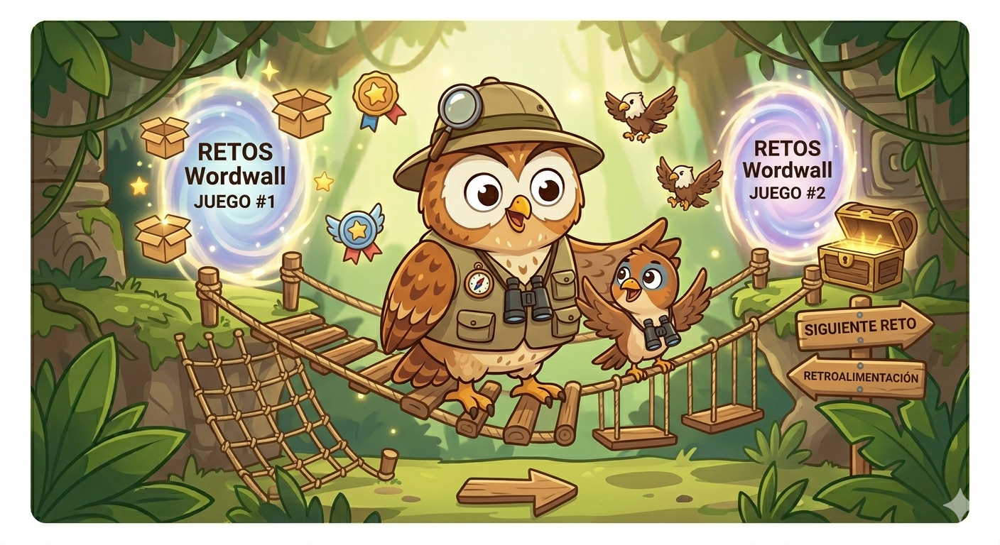

🎮 Estación 3: El Campo de Entrenamiento
🕵️ ¡Increíble trabajo, Explorador!

Ya conoces la teoría, pero un verdadero detective solo se hace experto con la práctica. Has llegado al Campo de Entrenamiento, donde deberás demostrar que tus ojos son tan agudos como los de un águila.
🕹️ Tus Desafíos de Entrenamiento:
Supera los retos: Abajo encontrarás dos portales mágicos (juegos de Wordwall).
Analiza cada pista: Lee con cuidado las frases que aparecen e identifica rápidamente cuál es la idea principal.
Gana tus insignias: Cada acierto te acerca más al tesoro final.
¡No te rindas si fallas, los mejores exploradores aprenden de sus errores!. Puedes volver a intentarlo ¿Listo para jugar?
Juego # 1 ¡Abre cajas!
Creado por: Profeviole27 Tomado de Wordwall
¡Una vez finalizada la actividad, dale clic al botón de retroalimentación!
Juego # 2 ¡Selecciona la hoja correcta!
Creado por Mariadelosangel45. Tomado de Wordwall